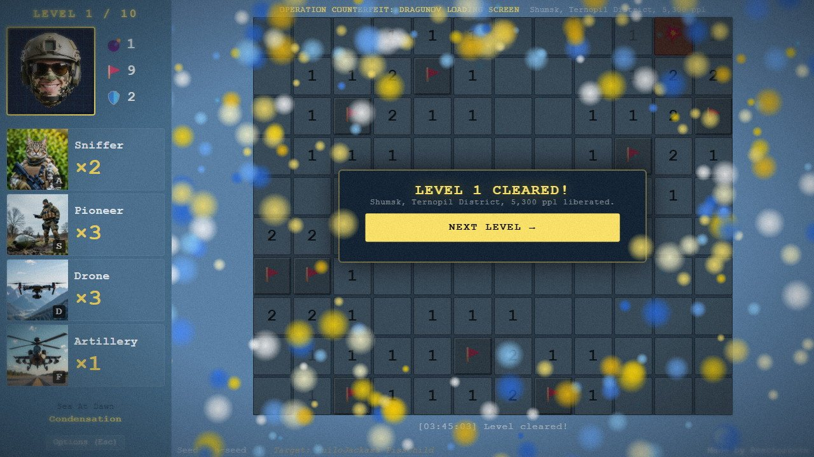
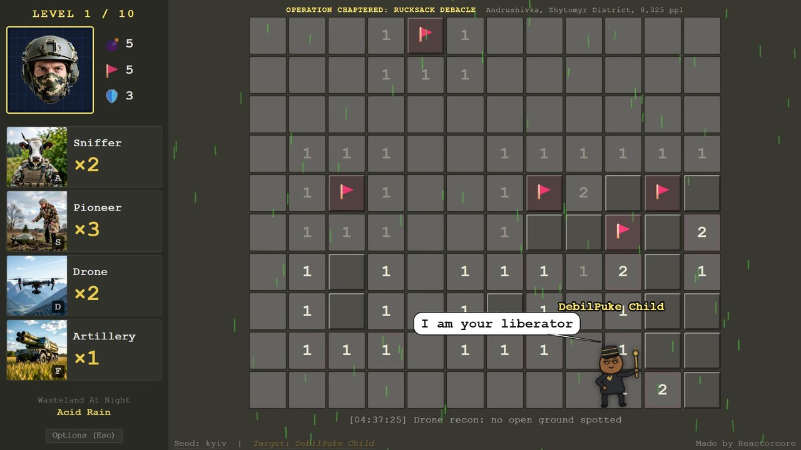
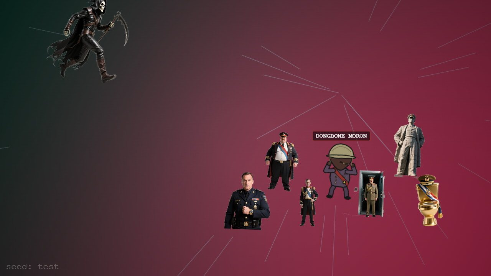

Ukrainian Turbo Minesweeper is classic Minesweeper with the cruelty taken out and the fun turned up. A tyrant has invaded Ukraine and scattered mines through its towns and villages. You flag them, wrap them up as a present, and send them back to the sender.
A campaign is ten levels on a twelve-by-ten board and takes five to ten minutes. Four military abilities mean you never have to guess blindly, a mistake costs a point of armor instead of the whole run, and every campaign has its own freshly drawn dictator who wanders onto your board to gloat. Beat level ten and he and his henchmen are bombed to pieces in a cutscene that is different every time.
This is a released game, not a concept: play it free in your browser on itch.io. The dictators are fictional, generated from word and part pools: no real leader is ever named or drawn. The setting is Ukraine, and the humor is aimed upward, at tyranny.
People who want a short, calm, satisfying puzzle: a break between tasks, or an evening wind-down. Minesweeper players who love the logic but hate the forced coin flip. People who enjoy seeing tyrants made ridiculous.
It's played with a mouse. The hotkeys are optional, nothing is timed against you, and the campaign clock isn't even shown.
Game's purpose
Play and relief: every click, flag and reveal answers back with sound and motion, so clearing a board feels good in the hand.
Celebration: a finale worth reaching, and a Trophy Room that keeps it.
Safety: the board is solvable by reasoning, with abilities for the rest. It deliberately avoids draining rest (no pressure, no punishing reset for a miss) and respect for your time (no padding, no stat clutter).
Core concept
Classic Minesweeper often ends on a guess: the board gives you no safe move, and half a minute of careful work dies on a coin flip.
Here the first click is always safe, abilities cover the hard spots, and you have three armor for the whole campaign. A campaign isn't one board but ten, so one mistake never ends the evening.
And the next campaign is a seed away, with a new dictator.

"Every level is a Ukrainian town or village. Clear its board and it's counted as liberated."
Lore and story
Where
Ukraine, one settlement at a time. Levels one to nine are small towns and villages, and level ten is a larger town. Each campaign changes the scenery every three levels, from 48 zone looks, and the light moves one step through the day with every level, with weather rolling over the board.
Why
Yet another smoothbrain dictator has invaded and mined the places where ordinary people live. Every campaign has a different one, made fresh from a pool of parts: his own name, face, hat, outfit and voice. Before you start you read his classified dossier, with his crimes listed in a typewriter font, and a file photo of the man himself.
He is a doodle, deliberately: a stick-figure tyrant with a sash and a scepter, because the game's whole attitude to tyranny is that it's small and absurd up close.
The job right now
Clear ten settlements. Send every mine back. When the last board is done, he gets what's coming, and then there's another dictator and another campaign whenever you want one.
Controls and interface
The mouse does the minesweeping, and the keyboard does the clever parts. The left side of the screen holds your mugshot (it reacts to what happens), the mine, flag and armor counters, and the four ability cards, each showing its key and its uses left.
The board
Left click
Open a tile, or fire the artillery when it's armed. The first click of a level is always safe.
Right click
Place or remove a flag, or cancel an armed artillery
Abilities
A
Sniffer
S
Pioneer
D
Drone
F
Artillery: arm it, then click
Menus
Esc
Options (pauses the level)
Enter / Space
Begin the operation on the dossier screen
Cheat codes (type during a level)
iddqd
Skip to the campaign's ending cutscene, with no trophy
iddt
Summon the dictator right now, to blow him up again
Revealed numbers glow until you've placed enough flags around them, then dim, so the board tells you what's still unsolved. The interface carries no scores and no clutter: it shows what you need to read the board and nothing else.

"Click the dictator when he wanders onto the board: a mine flies in, he's blasted off screen, and you gain one to three extra uses of a random ability."
Game layers
01 · Moment-to-moment
One board
A twelve-by-ten grid with ten to thirty mines. You open tiles, read the numbers, flag what you're sure of, and use abilities where the logic runs out. Zeros cascade outward ring by ring with a rising click, a mine hit freezes the screen for an instant before the blast, and a cleared level gets a camera flash and a snapshot.
Mines are placed on your first click, so the opening is never a gamble. Levels one to nine are easy to medium. Level ten is always the hard one.
02 · Low metagame
A ten-level campaign
A campaign is one dictator's invasion: ten levels, three armor for the whole run, and abilities whose uses refill on every level. Level one has ten mines, levels two to nine have between ten and twenty-four, and level ten has thirty.
Hit a mine and you lose one armor and carry on, with the level still in play. Lose all three and the campaign ends. You can restart the same campaign immediately, from level one, with the same dictator. Since a campaign is five to ten minutes and nine of its ten levels are gentle, that's a short retry, not a lost evening.
03 · High metagame
An endless supply of dictators
The overarching goal is simply that there's always another tyrant to send his mines back to, and a new one is a new seed away. Nothing runs out, nothing is locked, and nothing grows harder over the long run: every campaign has the same shape.
The living history is the Trophy Room: every dictator you've defeated, kept with his portrait, his seed and your best campaign time. It's a memento, not a ranking. You can export it to a file and import it elsewhere. The game is honest about its size: it has no world map and no persistent base, because a five-to-ten-minute game doesn't need them.
04 · Practical game flow
A coffee break
Open the page, pick a seed or take the random one, read the dossier, and begin. Esc opens the options and pauses the level, so a ringing phone never costs you anything, and the campaign clock only runs during active play.
Ten levels later comes the finale, and then back to the start screen, ready for another dictator.
Game modes
There's one way to play, the campaign, plus one way to look back at it:
CampaignOne dictator, ten levels, three armor: five to ten minutes, then the finale.
LevelOne twelve-by-ten board, abilities refilled: usually between half a minute and a minute.
Flashback is the second mode: from the Trophy Room, replay a defeated dictator's campaign from its seed as a muffled, grainy memory in which every explosion is three times bigger. A flashback win only improves a listed best time. It never adds a trophy.
Features and mechanics
The heart of it
A villain you actually meet
Minesweeper's enemy is normally a rule. Here it's a person. Each campaign's dictator is assembled from append-only pools of parts (face, hat, outfit and accessories), plus a name, a voice pitch and a list of crimes for the dossier. The same seed always draws the same man.
He shows up at the start (the dossier), during the levels (the harassment) and at the end (the finale), so the whole campaign is aimed at one face. Since the pools only ever grow, new parts can be added without changing any existing seed's dictator.

"The dictator stands with one to six henchmen for the finale. Their number, the attacker and the weapon all come from the seed."
No blind guessing
Four abilities and armor
The first click is always safe, with a three-by-three clear zone around it. After it, four abilities become ready, and their uses refill every level. Because they pick random targets, they're a way out of a stuck board, not a replacement for reading it.
Ability
Key
What it does
Uses per level
Sniffer
A
Flags one random mine for you
1 plus one per six mines
Pioneer
S
Opens three random safe numbered tiles
3
Drone
D
Reveals a random empty area, which cascades
3
Artillery
F
Arm it, then click: flags the mines and opens the safe tiles in a three-by-three area
1 plus one per fifteen mines
The safety net is three armor for the whole campaign: a mine costs one, and the level continues. Numbers dim once they have enough flags, so you always see what's left to solve.
Optional mischief
He harasses you, and you can hit back
On some levels the dictator slides in from a random screen edge and wanders drunkenly over the whole screen, name floating above him, taunting you in speech bubbles with a voice pitched to his seed. He appears on level ten every time, and elsewhere there's a one-in-three chance per level, with a cooldown of 45 to 120 seconds between visits.
Click him and the game answers at once: a mine flies in from the far edge of the screen, he's blasted off screaming, and you gain one to three extra uses of a random ability. The bigger the bonus, the deeper his scream. He never changes the board, and the extra uses expire with the level, so ignoring him is just as valid.
Content that multiplies
An ending that is never the same
The finale is built, not filmed. The seed picks the attacker, the weapon (from a stream of shells to a single nuke), the firing pattern, the dictator's last words, how many henchmen stand with him and the death animation they all share. Shells work through the henchmen front to back and end on him, and in the last hit he blows apart into separate pieces that fly off the screen.
There are 13 scene presets and millions of combinations, so the thirtieth cutscene still surprises. That's multiplicative content in miniature: every new attacker or weapon added to the pool combines with all the old ones. A Cutscene Lab in the downloadable version previews any seed.
Share a campaign
Seeds
Everything you can see about a campaign comes from its seed: the dictator, the operation name, the ten locations, the zone looks, the weather, the mine counts and the ending. Type any text into the start screen, not only numbers, and you get the same campaign every time.
So "try the seed kyiv" is a complete way to hand someone a campaign. Mine placement is deliberately not seeded, so a replay is never a memorized board.
A living history
The Trophy Room and flashbacks
Beating level ten records the dictator, his seed and your campaign time, with one entry per seed. Beating the same seed again only improves its time. Each entry shows his portrait turned on its side under a black ribbon, and a FLASHBACK button replays his downfall with exaggerated, muffled sound and three-times-bigger explosions.
Trophies live in the browser and can be exported to a file and imported again, so a collection moves between devices. There are no points anywhere in it: it records what you did.
Trivia
The two cheat codes are borrowed from Doom: iddqd is Doom's invincibility code and iddt its map cheat. Here they skip to the ending and summon the dictator.
The downloadable version ships four small developer tools for anyone who wants to see inside: a Cutscene Lab, a Doll Lab for the dictator generator, a Weather Lab and a Theme Lab. The game is public domain, so lifting any of its systems, a screen weather effect for example, is welcome.
Briefing: another dictator has mined another set of villages. Your file on him is attached. Ten settlements, three armor, four abilities, and a sky full of things that will be glad to help.
Open the first tile, read the numbers, flag the mines and send each one back where it came from. He'll turn up to gloat, so you may as well enjoy that too.
Free, short, and the ending is different every time.